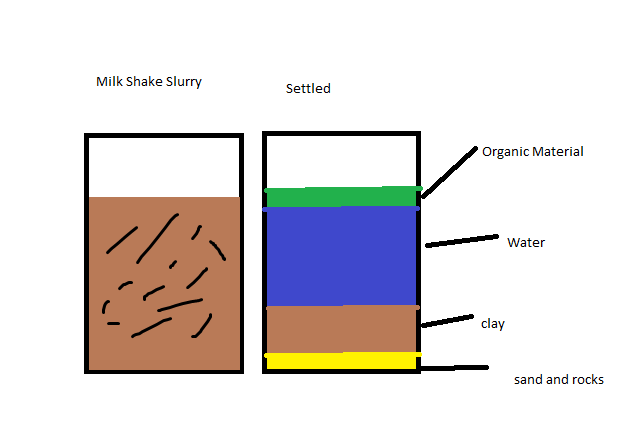
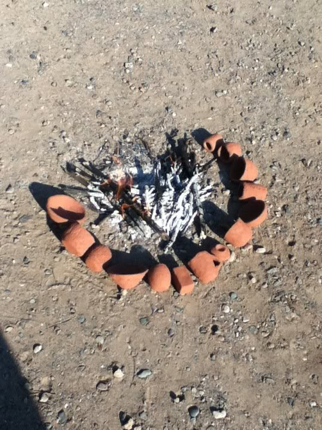
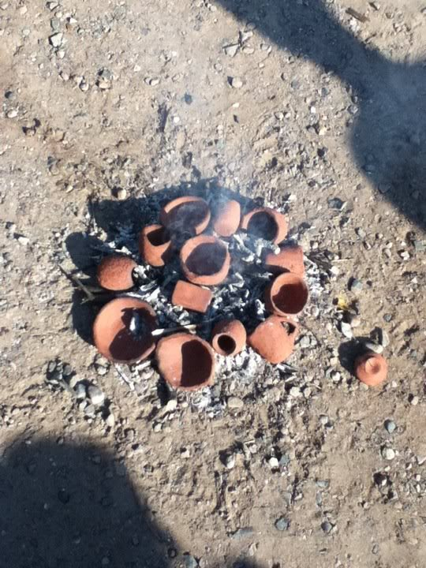
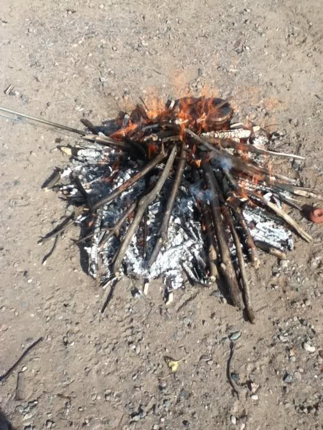
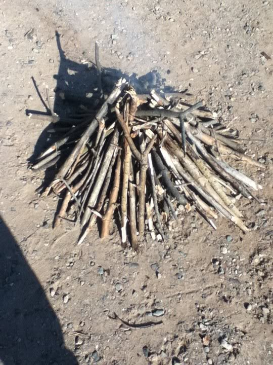
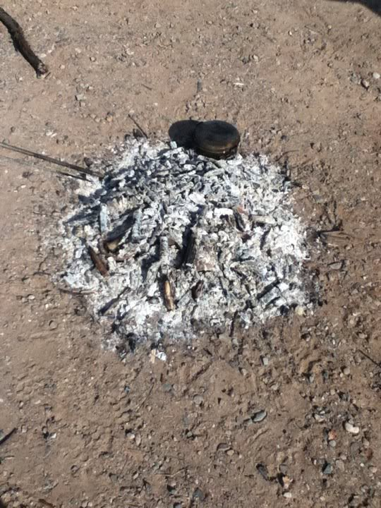
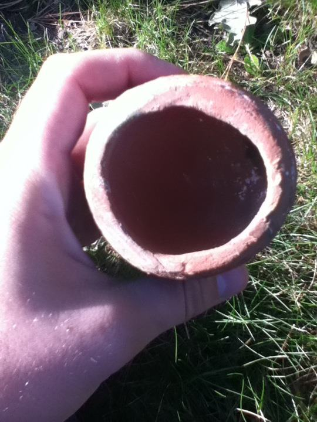
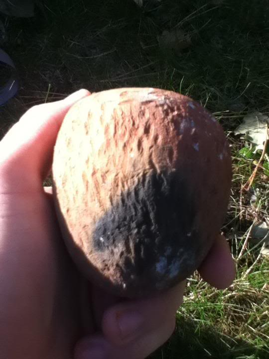

Clay has a variety of uses in primitive living. Today we will talk about making clay pottery and how to go about firing clay in a primitive type setting.
Clay may be found in a variety of places. From the dry ground itself, river beds, and lake floors to searching puddles accumulated in the woods where clay may likely be.
Dry method of processing clay.
Harvest clay from ground. Crush clay (rock on rock) break it into small pieces, about the size of a BB and then you can begin to grind it into powder.
Slowly and very carefully begin to rehydrate it. After hydrating the clay, let it sit for a few hours before molding.
Wet Method (these were wet method clay pots)
If clay is found in creek bed or lake (as often is the case) it may be sloppy and full of debris.
Take a 1-5 gallon bucket (depending on how much clay you have but it doesn’t much matter if you have more than you need)
Place clay in the bucket/container with water and mix the clay and debris up. Mash it and mix it until it gets to a “milk shake” consistency. You want no solid chunks of clay floating around.
After no more clay chunks are floating around, you should let it settle for about 24 hours. The layers will separate with the sand and rocks going to the bottom, the layer of clay on top of that, water, and then organic material will float to the top.

After about a day of it settling, skim off the organic material on the top. SLOWLY SLOWLY SLOWLY pour off a little bit of the water. Let it settle. Pour off a little more water, let it settle, continue until you’re down to the clay layer.
Scoop out the clay (Carefully!) missing the bottom (which is sand and dirt). Let it dry on rock or large piece of wood for a day. That, or you can hang it in a sack, t-shirt, pillow case, burlap sack, etc, and let it hang dry in the sun.
Next, after your day of drying the clay, is to test its plasticity or in other words, “how well it works”. Work the clay for a minute or two and turn it into a coil/ring/or pretzel. It should not crack. If you can make a coil you have OK clay. If you can make a pretzel without it breaking/cracking, you probably have some good working clay. Make a small pinch pot to see how well it responds and works.
Next, is a big part of guess and check. Tempering one’s clay. Angular pieces of sand are good for adding to clay, very fine gravel, ground bone, ash, they all work for tempering.
Take a 3 small balls from your clay source (pinch pot sized), flatten them to a pancake, slap in one side to your sand (5% temper), flip it over and slap into tempering material again (10% temper) then roll and mix the clay.
Take second test pinch pot ball of clay. Make clay into pancake, make it 10% temper and then mix it up, flatten to pancake, add another 5%-10% temper by slapping it into the tempering material on both sides once again.
Make a 30% temper pot as well. It will help to have a no temper pot as well.
With these pinch pots, put them in the shade for 24 hours where sun and wind can’t get to them. What you’re doing is looking for cracks and such. It will help to fire these later on to see how well they hold up.
You want them to be “bone dry” before they are fired. A week, 2 weeks, to a month before firing them. It is very possible, that if you wake up early in the morning, you could temper and fire pots all in the same day. The thing with waiting after you have your pinch pots is that it will have less and less water in them giving them a better chance when firing.
Wedging is next!
After the clay has the correct temper, smack and roll clay to get air pockets out of the clay; taking special care to NOT fold the clay. The goal is to get all the air pockets out. You can and will probably need to add a little water to allow pliability.
Molding:
after the clay is wedged, you may begin to mold the clay. Having wet hands is a good idea to prevent cracking. Adding water when needed to keep the clay moist.
Using the pad of your thumb, work a hole into the pot. If you see a crack form, smooth it over. the back of ones’ fingernail seems to work well.
Be careful not to over hydrate your clay. If it is too wet, when left to dry, it will lack integrity and slouch, allowing for cracks to form.
After your thumb gets to the bottom of the pot, begin opening it up. Get the pot as thing as safely possible, making sure to not leave the bottom too thick. The thinner the pot, the less likely it is to crack when you fire it.
Drying can be done in a day to a year or more. It’s all how long you want to let it dry and how careful you are when firing it. These pots were dried for 3 weeks.
Firing:
Make Tipi fire with pots surrounding it. This is the beginning of getting the pots warmed up and slowly getting rid of any water that could be left in them. You want all water to be out of them by the time it heats up to 212 degrees F. This is why they will slowly be moved closer and closer to the fire.

After about 15-20 minutes of moving the pots closer every so often, move them onto the coals

Next, is to cover the pots with sticks, in the tipi fire and continue heating them. This FIRST layer is to cover the pots with ash to help protect them from the environment.

After that initial layer of ash, it’s time to beef up the fire and maintain the heat for about 1.5-2 hours, sustaining a warmer fire. Build this layer again on top of your pottery.

It’s better to fire at night because the goal of this is to get the pots heated up until they are glowing orange. You can let the pots cool over night, letting them cool slowly so they do not crack.

After the pots have had sufficient time to cool (about a day) it is time to dig them out from the ashes.
Here is an example of finished pinch pot.
The reason the pinch pot showed above is round is due to trying to keep with traditional shapes of pinch pots in the Great Lakes region. The pots were held upright between stones and heated near fires to bring water to a boil or otherwise cook the pinch pots’ contents.

